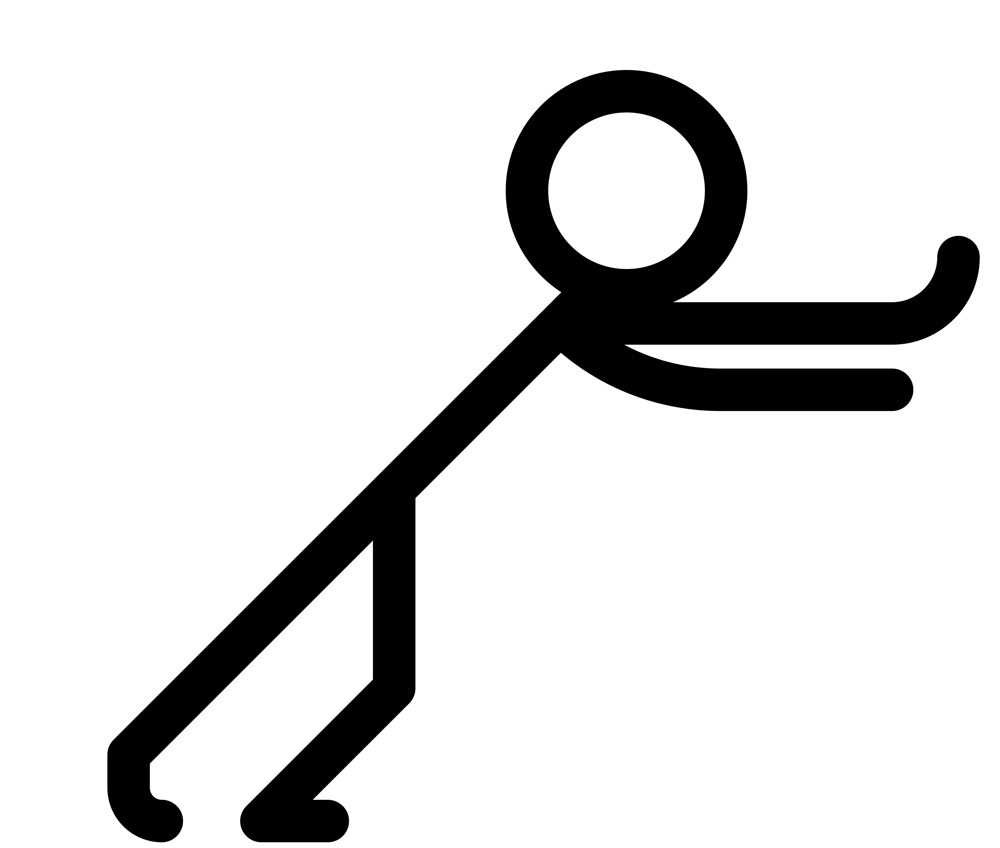
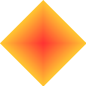

2. shape-outside: circle()

The circle() function creates a circular text wrap area. Text flows smoothly around the curved boundary. Perfect for portraits, logos, or any circular imagery in your layouts.

Text flows around the image's alpha channel. The shape-image-threshold controls which pixels define the boundary. This creates natural text wrapping around irregular shapes rather than rectangular bounding boxes.
The circle() function creates a circular text wrap area. Text flows smoothly around the curved boundary. Perfect for portraits, logos, or any circular imagery in your layouts.

Polygon() defines custom vertices for any shape. This diamond uses four points: top, right, bottom, left. You can create any polygonal shape by specifying coordinate pairs.
Border-box uses the element's border-box as the shape, including border-radius. This creates rounded shapes without images. Combined with border-radius, you get pill or rounded rectangle shapes.
Text flows between two floated shapes simultaneously. This creates decorative margins or frames around content. Both elements use shape-outside: border-box with border-radius to create the pill shapes.